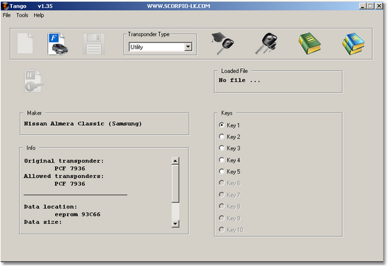
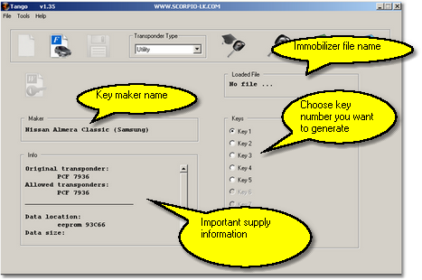
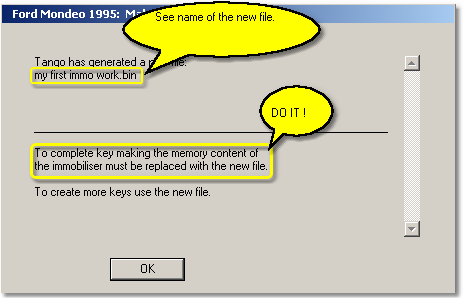

|
Key Maker interface

|
|
Open immobilizer file.
Click to open an immobilizer dump.
|
|
|
Write transponder.
Writes a transponder according to the immobilizer dump. Becomes active if the immobilizer dump opened.
|
Key maker usage.
Key maker usage consists of a four steps. The 4-th step is additional and depends on a vehicle model.
| ► | Open an immobilizer dump file. |
| ► | Choose number of the key you want create. |
| ► | Place a transponder into the coil and click the WRITE button. |
| ► | In some cases the program asks you to save a modified immobilizer dump. This dump must to be written into the immobilizer. |
 First of all take a look at the picture.
The "Loaded File" window displays the immobilizer file name. Ensure that a valid dump is stored.
The "Maker" window displays selected maker name. Ensure the right key maker selected.
The "Info" window displays an important information:
| · | Original transponder. Informs you about type of the original transponder. |
| · | Allowed transponder. Informs you what type of transponders is suitable for the key maker. You have to use exactly this type. |
| · | Data location. The immobilizer memory may be stored in various chips. The description informs you about from where you have to read a dump. Some immobilizers can have various chipsets. In this case the field displays several possible chips. Find one of them inside of the immobilizer and read it. |
| · | Data size. Each chip has certain memory size. The key maker accepts files with the described size. In case of multiple chipset this field displays several sizes, any of them is valid. |
| · | Data format. This field appears in case of 93CXX eeprom seria. There are two standards of data layout: Intel format and Motorola format or Little Endian and Big Endian respectively. The data layout depends on a chip-programmer that is used for eeprom reading. This field informs you what kind of format is suitable for the key maker. Usually you can see that both formats are suitable. It means that the program can understand any data layout. |
_____________________________________________________
Create a key step by step...
| · | Firstly, run the key maker interface according to the vehicle and read information in the "Info" window. Watch the Data location field describes the memory chip. Find out the chip inside of the immobilizer and read it. Save the read data (dump). |
| · | Click the OPEN IMMOBILIZER FILE button and load the saved dump. The program will analyse the dump. If the dump is correct the WRITE button becomes active and the "Keys" window will display the range of key numbers that can be created. |
| · | Take a look at the "Info" window, the Allowed transponder field. Ensure you use a transponder exactly the indicated type. Place the transponder into the coil. Choose the key position you want create in the "Keys" window. Click the WRITE button. This starts the writing process and transponder will be stored with the appropriate data. |
| · | At this point you may be asked to save a new immobilizer dump. The program displays a standard File Save dialog where you have to save the data. After this you will be informed about the new data saved and must be written into the immobiliser: |

Write the new dump into the immobilizer. Now it is ready to operate with the created transponder.
If you are not asked to save a new file, it means that immobilizer is ready to operate with the created transponder without file replacing.
|